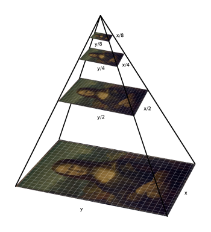

图像金字塔
通常，我们需要将图像转换为与原始图像不同的尺寸。为此，有两种操作可能的选择：- 放大图像(Upsize)或
- 缩小尺寸(Downsize)。
举个例子，在一些著名的CNN神经网络中(如ResNet、YOLO、SSD等)，它们都使用了图像金字塔获取输入图像的特征。 当然，各个框架都有着稍微不一样的特征提取方式。这里就不细谈了。
图像金字塔是图像的集合。所有图像均来自单个原始图像。图像被连续降采样直到达到某个所需的停止点。
有两种常见的图像金字塔：
- 高斯金字塔(Gaussian Pyramid)：用于对图像进行下采样(Downsample)
- 拉普拉斯金字塔(Laplacian Pyramid)：高斯金字塔的相反。用于从金字塔较低(分辨率较低)的图像中重建上采样(Upsample)的图像
高斯金字塔
将金字塔想象成一组图层，其中图层越高，尺寸越小。每层都从下到上编号，因此第(i+1)层（表示为Gi+1）小于第i层（Gi）。
为了产生高斯金字塔中的层(i+1)，我们执行以下操作：
- 将Gi与高斯核卷积：
- 删除所有偶数行和列。
上面的步骤对图像降采样很有用。如果要增大它会怎样？：填充零的列
- 首先，将图像放大为每个维度的两倍，并添加新的偶数行
- 使用上面显示的相同内核乘以4进行卷积，以近似“丢失像素”的值
这两个过程（如上所述的下采样和上采样）可以使用OpenCV函数pyrUp()和pyrDown()实现，正如我们将在下面的示例代码中看到的那样：
注：当我们减小图像尺寸时，实际上是在丢失图像信息。
函数
void pyrDown(Mat & src, Mat & dst, const Size & dstsize=Size(), int borderType=BORDER_DEFAULT)
模糊图像并对其进行下采样。默认情况下，输出图像的大小计算为Size((src.cols + 1)/ 2, (src.rows + 1)/ 2)，但是在任何情况下，都应满足以下条件：
|dstsize.width * 2-src.cols|≤2
|dstsize.height * 2-src.rows|≤2
void pyrUp(Mat & src, Mat & dst, const Size & dstsize=Size(), int borderType=BORDER_DEFAULT)
上采样图像，然后使其模糊。默认情况下，输出图像的大小计算为Size(src.cols \ * 2, (src.rows \ * 2)，但是在任何情况下，都应满足以下条件：
|dstsize.width-src.cols ∗ 2|≤(dstsize.width mod 2)
|dstsize.height-src.rows ∗ 2|≤(dstsize.height mod 2)
参数
src —— 输入图像。 dst —— 输出图像；它具有指定的大小，并且与src类型相同。 dstsize —— 输出图像的大小。 borderType —— 像素外推方法（不支持BORDER_CONSTANT）
例子
#include <iostream>
#include <opencv2/opencv.hpp>
using namespace std;
using namespace cv;
int main() {
cout << "\n Zoom In-Out demo \n "
"------------------ \n"
" * [i] -> Zoom in \n"
" * [o] -> Zoom out \n"
" * [ESC] -> Close program \n" << endl;
// 读取图像
Mat src = imread("Lenna-512.png");
while (1) {
imshow("Demo", src);
char c = (char)waitKey(0);
if (c == 27) { break; }
else if (c == 'i') {
pyrUp(src, src, Size( src.cols*2, src.rows*2));
cout << "** Zoom In: Image x 2" << endl;
} else if (c == 'o') {
pyrDown(src, src, Size( src.cols/2, src.rows/2 ));
cout << "** Zoom Out: Image / 2 " << endl;
}
}
return 0;
}
结果
这是我使用的原图。注意这个图像的大小是512×512像素，512=29，因此降采样不会产生任何错误。按下两次‘o’，进行了两次pyrDown()操作，这是新的图像： 再按下两次‘i’，又进行了两次pyrUp()操作。由于我们缩小了图像的大小，因此我们本应损失一些分辨率。最后的输出图如下：